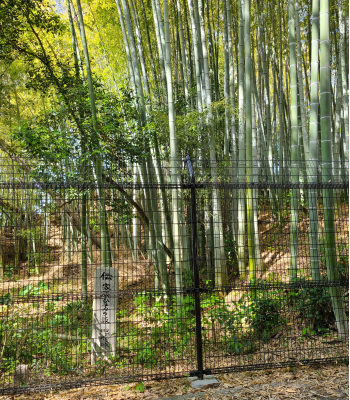
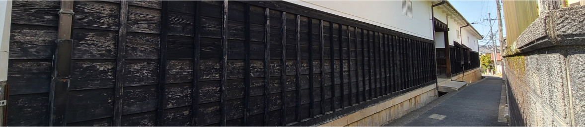
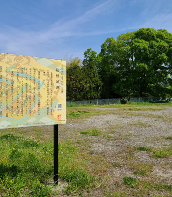
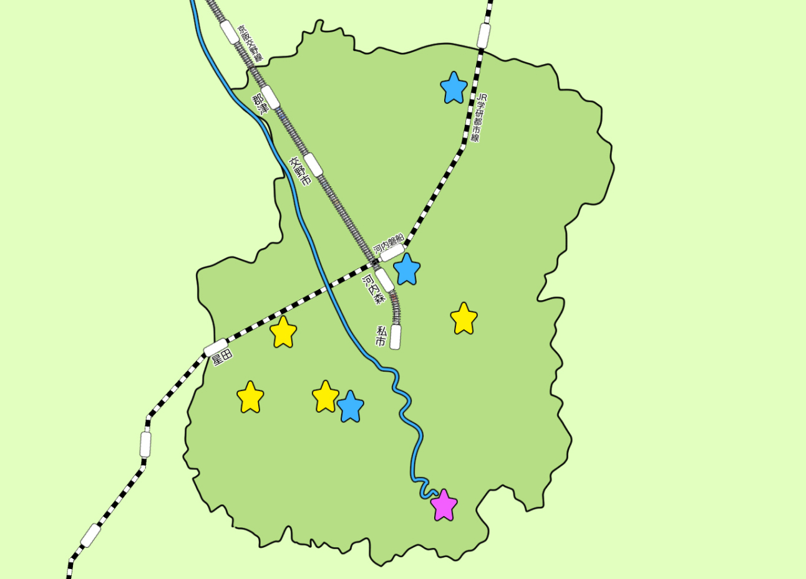

交野山の観音岩
交野山（こうのさん）は、交野市倉治（くらじ）に位置する山です。
標高341mと決して高くない山のため、ハイキングにも人気があります。
特筆すべきはその頂上に観音岩と呼ばれる巨岩がそびえていること。
観音岩の上まで登ることもでき、360°見渡すことが出来ます。
晴れた日には京都・大阪・神戸・奈良方面まで見渡すことができ、
条件が良ければあべのハルカスが見えることもあります。
星のブランコ
星のブランコは、ほしだ園地の中にある木床版の吊り橋です。
標高180ｍ、全長280ｍ、最大地上高50ｍで、人道吊り橋としては国内最大級です。
交野市は七夕伝説の里であるため、「星降る里のシンボル」という意味合いを込めてこの名前がつけられました。
吊り橋からはほしだ園地の景色が一望できます。
また昨今では紅葉の名所としても取り上げられることも多く、シーズンになるとその絶景を求めて全国から観光客が訪れるスポットです。
「歴史ってなんだか苦手」
「堅苦しい話は好きじゃない
いえいえ、私が知ってほしいのはもっと気軽な歴史のマメ知識。
ちょっと意外な交野市の一面を、あなたも覗いてみませんか？
-
平安時代のあの書物に載ってる！
「野は嵯峨野さらなり、
印南野、交野、駒野、飛火野、しめし野、
春日野、そうけ野こそすずろにをかしけれ」
これは、枕草子の第164段の一部です。
そう、交野市はあの枕草子に書かれているんです。
その昔、交野市（と、枚方市の一部までの一帯）は「交野ヶ原」と呼ばれる丘陵地でした。
広大な原野で大きな川が流れていたことで、多くの野鳥がいたそうです。
そのため、交野市、もとい交野ヶ原は平安時代の貴族の間では遊猟地として有名だったのだとか。
当時の貴族にとって、交野は有名リゾート地だったのかも！？
-
あの有名な戦国武将にゆかりのある場所がある！
交野市の南側に位置する星田地区。
ここには、あの徳川家康が潜んでいたといわれるヤブがあるんです。
時は1582年。織田信長が明智光秀に裏切られ、本能寺で自害を迫られたその頃、
徳川家康は少人数の家臣を引き連れ、堺に滞在していました。
当時、近畿一帯は信長の力によって治安が保たれていましたが、信長が亡くなったとあれば、その天下の座を求めて他の武士たちがいつ争いを始めてもおかしくない状態。
家康は信長と同盟を結んでいたため、立ち位置が微妙な状態に。
しかし幸いなことに、家康は信長の死の一報をいち早くキャッチすることが出来たため、身の危険を察して三河に帰ることにしました。
その際、道案内が来るのをを待つのに、交野市の星田地区にあるヤブに潜んでやり過ごした、
という言い伝えが残っています。
 -
"アレ"が長～～いお屋敷がある！
私部地区の住宅地に、突如現れる立派で長～～い門構え。
ここ北田家住宅は、かつて江戸時代に私部城の城主・安見直政の重臣である北畠顕家が住んでいたお屋敷で、通称「代官屋敷」とも呼ばれています
55.8ｍもある長屋門は民家のものとしては日本最長。また、母屋の玄関が上手に突出した角屋がお屋敷最大の特徴で、その形状が全国的にも数少ないことから、約300年前の貴重な建物として国の重要文化財に指定されています。
ちなみにお屋敷の中は、年に何回かの頻度で見学できる機会があります。（コロナ禍で中止の可能性あり）
気になる方は、一度交野市役所のほうまでお問い合わせしてみてください。
-
実は…かつて〇〇がありました
交野市の北西部に位置する私部（きさべ）地区には、なんとその昔お城がありました。
私部城（または交野城）と呼ばれたそのお城は、安見直政の居城だったそうです。
一説によれば、1560年頃に築城され、織田信長没後に廃城されたとされていますが、築城年も廃城年も正確な時期は不明とされています。
そんな私部城ですが、現在では小さな石垣跡？と空き地が残っているのみ。
本丸、二の丸天守、三の丸…と、そこそこ広大だったようですが、その土地も今では畑になっていたり、住宅や郵便局が建ち並んでいます。
外観資料なども残されていないようなので、一体どんな様相だったのか？
今となっては神のみぞ知るといった感じですが、かつての城址を訪れて、戦国時代のロマンを感じてみるというのも乙なもの…かもしれないですね。

ロマンを知って！
↓気になる★をクリック！
